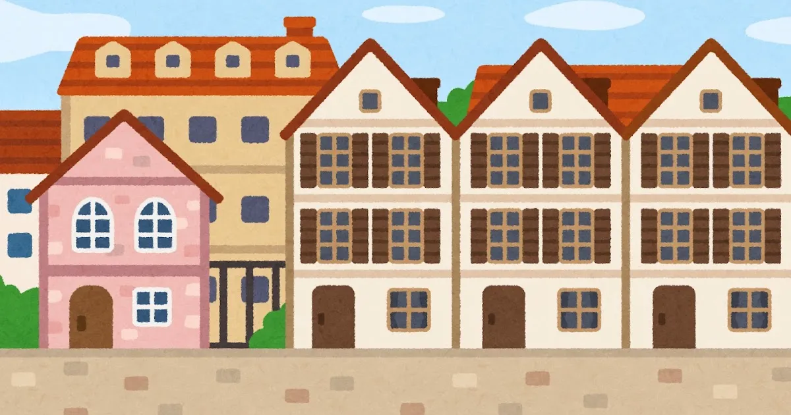

ゆる国家サーバーの遊び方
ゆる国家サーバーでは、通常のマイクラ世界に、ステートと呼ばれる共同体を設立できます。
ステートの領域はコマンドで取得するわけではなく、建築や活動実態に応じて主張されます。
ステートを建てる際はdiscord内フォーラムで場所、名称、代表者名を書くだけ。
各ステートは独自にルールを制定可能。どんなステートになるかは自治にゆだねられています。
領主になるのも、国々を渡り歩く旅人になるのも、あなたの選択次第。
詳細はDiscordサーバーにて確認できます。右上の[参加する]からご参加ください。